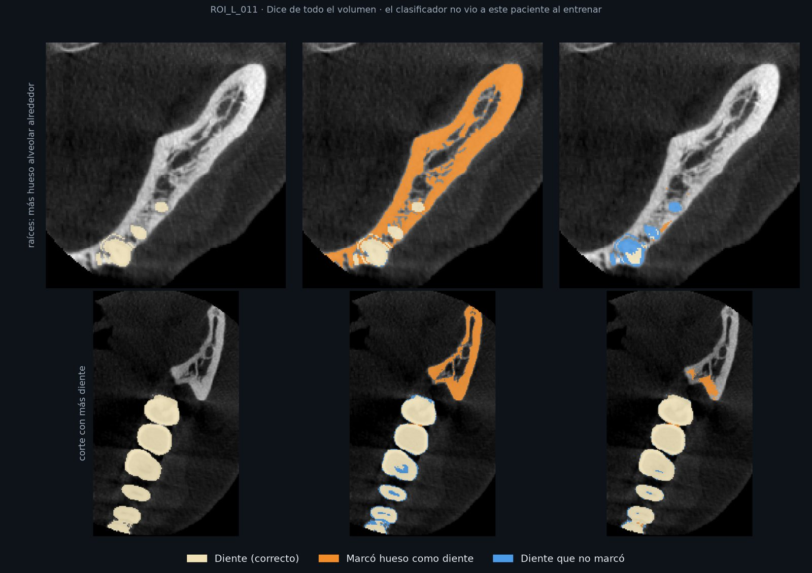

Una radiografía aplana todo; una tomografía lo separa
Una radiografía es una imagen plana: todo lo que atraviesa el rayo queda superpuesto. Una tomografía es un volumen 3D formado por vóxeles, pequeños cubos que guardan cada uno la densidad de un punto del cuerpo. Por eso se puede recorrer por dentro, capa por capa.

Qué hace el programa con ese volumen
- Lo recorre corte por corte en tres planos (vista 2D).
- Aísla una estructura por su densidad y la convierte en un modelo 3D que se puede girar, iluminar y cortar.
Cómo se toma una tomografía dental (CBCT)
CBCT significa tomografía computarizada de haz cónico: es la tomografía que se usa en odontología. Se diferencia de la de hospital (CT) en la forma del haz de rayos X.
El CBCT da una sola vuelta con un cono de rayos X: es rápido y usa poca radiación. Pero cada vóxel guarda un número de densidad que no está calibrado: en un CT de hospital esos números siguen la escala Hounsfield (HU), donde el agua vale 0 y el aire −1000; en el CBCT cambian de un equipo a otro.
Vóxel
CTsuele ser más alto que ancho
CBCTcúbico, de 0,1 a 0,5 mm
Buen detalle de dientes y raíces en 3D
Radiación
CTdosis mayor
CBCTdosis menor, toma más rápida
Por eso es el estándar en odontología
Ruido
CTbajo
CBCTalto, por la radiación dispersa
El programa suaviza la superficie
Valores
CTcalibrados en Hounsfield
CBCTcambian según el equipo
El programa normaliza cada estudio
Tomografías públicas y anónimas
Tomografías públicas y anonimizadas, con el tamaño del vóxel en mm. Para los dientes se revisaron nueve conjuntos y se usan dos: la muestra de 3D Slicer y STS-3D-Tooth. Para probar huesos rotos se suman cuatro conjuntos médicos de otras partes del cuerpo (ver la sección 9).
Muestra CBCT de 3D Slicer
Un paciente con brackets, antes y después de una cirugía. 360 × 360 × 330 vóxeles de 0,5 mm.
STS-3D-Tooth
11 pacientes con cada diente marcado por expertos. Con ellos medimos el umbral real de los dientes.
TAC de hospital
9 estudios de cráneo, pelvis, costillas y columna. Solo para comprobar que el programa distingue bien el hueso.
Del archivo al volumen
- DICOM es el formato de los equipos médicos: un archivo por corte.
- Los cortes se ordenan por altura y se apilan en un volumen.
- El número guardado se convierte en densidad.
- Sin el tamaño del vóxel, el modelo sale estirado.
- Privacidad: ningún estudio se sube al repositorio, y un script revisa que no traiga el nombre del paciente.
Una ventana con 2D y 3D
Un programa de escritorio en Python (PySide6 + PyVista/VTK): a la izquierda, los cortes en 2D; a la derecha, el modelo en 3D. Las dos vistas trabajan sobre el mismo estudio.


Decisiones de diseño
- Módulos independientes (
Estudio,VisorCortes,Render3D): cada uno tiene una tarea y una interfaz fija, así que se desarrollaron por separado y se unieron en una sola ventana. - Una sola escala de densidad: todo estudio se normaliza al cargarse, de modo que los mismos umbrales sirven para cualquier archivo (sección 4).
- Nivel de detalle automático: con estudios grandes, el 3D reduce la resolución para seguir respondiendo con fluidez.
- 91 pruebas automáticas comprueban la carga, la escala, las densidades, el motor 3D y la ventana.
Abrir el programa
pip install -r requirements.txt
python -m src.app_qt data/raw/PreDentalSurgery.gipl.gzLos estudios van en data/raw/ y nunca se suben al repositorio. Los modelos del laboratorio 3D de esta página salen de scripts/generar_web.py, con los mismos rangos del programa.
Del archivo del equipo al modelo 3D
El archivo pasa por una cadena de pasos y termina en un Estudio: el volumen con sus medidas reales. Ese mismo Estudio alimenta las dos vistas.
El paso clave: la escala
El CBCT no está calibrado: en dos estudios del mismo paciente el aire valía 0 y −2239.
El programa busca dos cosas que toda tomografía tiene, el aire y el tejido blando, y las lleva siempre a los mismos números, como calibrar un termómetro con dos puntos fijos.
La densidad decide qué es hueso, diente y metal
Cada vóxel guarda un número: cuánto frenó los rayos X ese punto del cuerpo. A ese número le llamamos densidad. El aire casi no frena los rayos; el hueso, bastante; el esmalte y el metal, mucho más. Por eso cada tejido ocupa su propio tramo de la escala.
Escala normalizada del programa (sección 4), de menor a mayor densidad.
Qué es un umbral
Un umbral es un valor de corte. El programa lo compara con cada vóxel del volumen:
- Si la densidad del vóxel es mayor o igual al umbral, el vóxel se conserva.
- Si es menor, se descarta.
- Lo que se conserva es la estructura: con umbral 1000 quedan los dientes; con 2000, solo el metal.
Subir el umbral quita capas, de la menos densa a la más densa: tejido blando → hueso → dientes → esmalte → metal.
Pruébalo: mueve la barra o elige una estructura. En celeste, los vóxeles de ese corte que pasan el umbral.
Cuántos vóxeles hay de cada densidad
Histograma del estudio, en escala logarítmica. En celeste, lo que pasa el umbral; clic para fijarlo. El pico grande de la izquierda es el aire y el tejido blando.
El umbral de cada estructura, en dos escalas
El programa trabaja en su escala normalizada. Para comparar con la literatura médica se traduce a unidades Hounsfield (HU), la escala de los tomógrafos de hospital: aire −1000, agua 0.
| Estructura | Programa | Hounsfield (HU) |
|---|---|---|
| Hueso | 700 | 150 |
| Dientes | 1000 | 820 |
| Esmalte | 1250 | 2000 |
| Metal | 2000 | — |
En unidades Hounsfield, desde ≈ 820 un vóxel es diente. Lo medimos en 11 pacientes con los dientes marcados por expertos; la literatura sugería 1300.
Índice de Dice entre el umbral y el experto. El hueso que rodea al diente tiene casi su misma densidad, y el umbral los confunde.
Índice de Dice
Compara dos marcas del mismo diente: la del programa y la del experto.
2 × vóxeles en común ÷ (vóxeles de una + vóxeles de la otra)
0 = no comparten nada · 1 = idénticas.
Del gris al modelo 3D
Para mostrar una estructura en 3D se necesita su superficie: el límite entre los vóxeles que superan el umbral y los que no. El algoritmo marching cubes construye esa superficie con triángulos.
Cómo funciona marching cubes
- Recorre el volumen en cubos de 8 vóxeles vecinos.
- Marca cada esquina como dentro (densidad ≥ umbral) o fuera.
- Si un cubo tiene esquinas dentro y fuera, la superficie lo atraviesa: una tabla de 15 casos indica qué triángulos poner.
- Cada vértice se ubica donde la densidad cruza exactamente el umbral. La unión de todos los triángulos es la malla 3D.
A la izquierda, la misma idea en 2D sobre un corte real: puntos celestes dentro, grises fuera y la línea blanca es el borde calculado.
Cinco preguntas, cinco controles del programa
Del gris a la malla
Marching cubes (flying edges, 4–5× más rápido). La barra de Umbral recalcula la superficie.
Iluminación
Phong calcula la luz en cada píxel y resalta las raíces finas.
Rendimiento
Con estudios grandes usa 1 de cada 2 vóxeles: 4,4× menos triángulos. Un contador lo muestra.
Suavizado
Taubin quita el aspecto de escalera sin encoger el modelo.
Plano de corte
Un plano que se arrastra: el interior del diente se ve en rojo.
El modelo real
Mallas calculadas con el código del programa a partir de la tomografía de muestra de 3D Slicer: un paciente real con brackets. Se ven las coronas, las raíces y los brackets sobre los dientes.
El modelo es una cáscara: al cortarla se ve por dentro, en rojo, la pulpa del diente.
Lo que medimos
Rango de valores de la muestra. En Hounsfield el aire valdría −1000; aquí vale 0, y en otro estudio del mismo paciente −2239. Por eso cada estudio se normaliza.
En unidades Hounsfield (HU), la escala de los tomógrafos de hospital, un vóxel desde 820 es diente. Medido en 11 pacientes; la literatura sugería 1300.
La superficie se construye en 0,086 s en vez de 0,408 s: cambiar de estructura es casi instantáneo.
Cuánto coincide lo que marca el programa con lo que marcó un experto (0 = nada, 1 = idéntico; ver sección 5). Con el modelo entrenado de la sección 8 pasa de 0,64 a 0,86.
De 83 fragmentos de hueso roto marcados por expertos, ninguno desapareció; se conserva al menos el 99,3 % del hueso (sección 9).
Programas que verifican solos que cada parte siga funcionando después de cada cambio.
Un modelo que mira el contexto

Con un umbral, el programa marca parte de la mandíbula como si fuera diente. Entrenamos un modelo que, además de la densidad, mira el contexto de cada vóxel: su altura, los bordes y qué tan lejos está del esmalte.
Mejora en los 11 pacientes, cada uno evaluado sin haberlo visto al entrenar.
La densidad sola pesa el 7 % de la decisión; la distancia al esmalte, el 38 %. Todavía no está integrado en el programa.
El hueso roto se ve en 3D
Probamos el programa con un TAC de hospital de un paciente con trauma. El círculo marca la fractura: una línea que cruza la frente en diagonal.

Una fractura mide uno o dos vóxeles: el suavizado la borraría.
El modelo del cráneo, a resolución completa: más triángulos, más detalle.
En un portátil. La camilla se quita sin perder fragmentos.
Ver la fractura no es diagnosticarla. Datos: CQ500-CT-397 (CC BY-NC-SA 4.0). También se probó con pelvis, costillas y columna (results/fracturas/).
Qué no resuelve todavía
Límites del programa con tomografías dentales (CBCT) y, en particular, con los dientes.
Densidades que se cruzan
El hueso denso de la mandíbula tiene casi la misma densidad que la dentina: un umbral no los separa (coincidencia de 0,64).
Dientes unidos
Con un umbral, los dientes vecinos y el hueso que los rodea salen como una sola pieza: no se aísla diente por diente.
El metal
Brackets, coronas e implantes generan rayas en la imagen que crean superficies falsas alrededor de los dientes.
Volumen parcial
En los bordes un vóxel mezcla dos tejidos: el esmalte, que es delgado, puede quedar con densidad de dentina.
Ruido del CBCT
El suavizado limpia la superficie, pero también redondea detalles finos como las puntas de las raíces.
Calibración por equipo
La normalización ajusta el aire y el tejido blando, no las densidades altas: otro equipo puede requerir otros umbrales.
El clasificador de la sección 8 resuelve buena parte de los dos primeros límites (0,64 → 0,86), pero todavía no está integrado en el programa.
Quién hizo qué


Investigación
Referencias principales
- Scarfe W.C., Farman A.G. (2008). What is cone-beam CT and how does it work? Dental Clinics of North America, 52(4), 707–730.
- Pauwels R. et al. (2015). CBCT-based bone quality assessment: are Hounsfield units applicable? Dentomaxillofacial Radiology, 44(1).
- Pauwels R. et al. (2013). Variability of dental cone beam CT grey values for density estimations. British Journal of Radiology, 86(1021).
- Reshetnikov A. et al. (2024). Dental tissue density in healthy children based on radiological data. JMIRx Med, 5, e56759.
- Lorensen W.E., Cline H.E. (1987). Marching cubes: a high resolution 3D surface construction algorithm. SIGGRAPH, 21(4), 163–169.
- Schroeder W., Maynard R., Geveci B. (2015). Flying edges: a high-performance scalable isocontouring algorithm. IEEE LDAV.
- Phong B.T. (1975). Illumination for computer generated pictures. Communications of the ACM, 18(6). · Gouraud H. (1971). IEEE Trans. Computers, C-20(6).
- Taubin G. (1995). A signal processing approach to fair surface design. SIGGRAPH '95.
- Fedorov A. et al. (2012). 3D Slicer as an image computing platform for the Quantitative Imaging Network. Magnetic Resonance Imaging, 30(9). (Muestra CBCTDentalSurgery.)
- Wang Y. et al. (2025). STS-3D-Tooth. Scientific Data, 12, 117. · Lumetti L. et al. (2026). ToothFairy3, MICCAI.